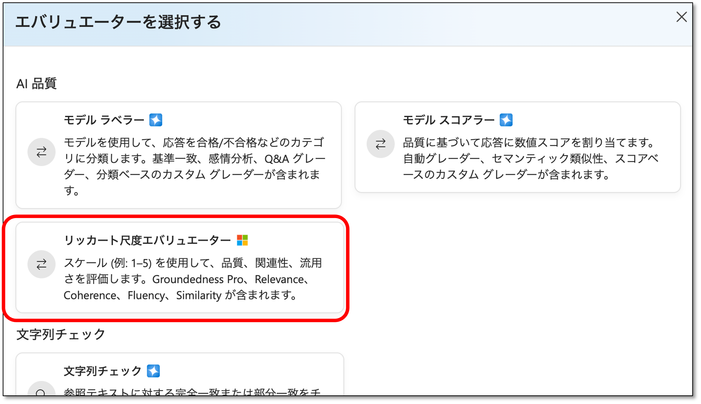
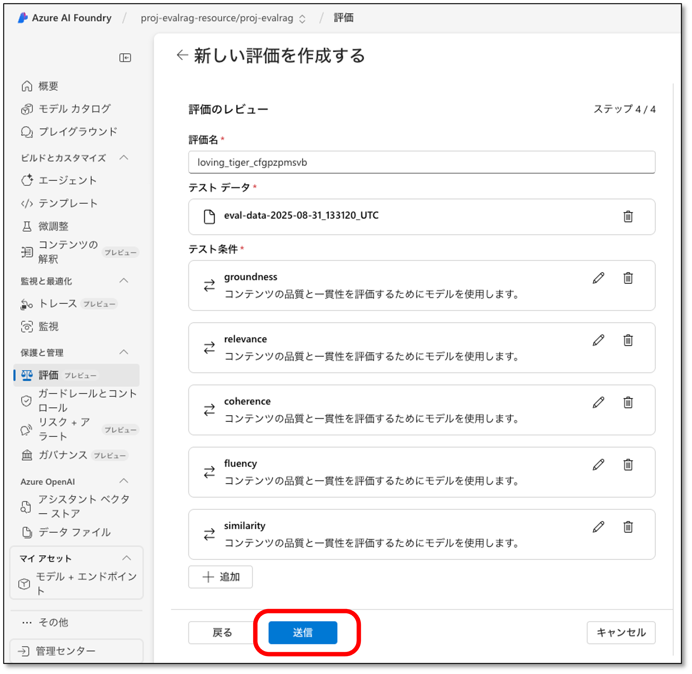

Prompt Flow における評価手順¶
Prompt Flow を使用して RAG の評価を行う手順は以下の通りです。
正解データセットを作成する¶
質問と Ground Truth(期待される回答)を作成します。以下のように CSV 形式で作成し、質問は「question」のフィールドに、Ground Truth(期待される回答)は「ground_truth」のフィールドに定義します。
"query","response","context","ground_truth"
"一日の労働上限時間は？","一日の労働時間の上限は8時間です。","['[Source20]: す。）は、１週４４時間まで働かせることが認められています...(略)","8時間です"
"有給は何日取得できますか？", "最低10日の有給休暇が与えられます。","['[Source38]: 有給休暇の取得方法について...(略)", "20日です"
Azure AI Foundry にアクセスする¶
Azure AI Foundryのポータルにアクセスします。 https://ai.azure.com/
Azure AI Foundryのリソース作成画面を開く¶
「新規作成」をクリックして、Azure AI Foundryのリソース作成画面を開きます。
▲ 図1-1： Azure AI Foundryのリソース作成画面を開く
リソースの種類を選択する¶
「Azure AI Foundryリソース」を選択し(①)、「次へ」をクリックします(②)。
▲ 図1-2： Azure AI Foundryリソースの種類を選択する
プロジェクト名を入力する¶
プロジェクト名を入力します(①)。プロジェクト名は任意の名前を付けることができますが、わかりやすい名前を付けることをお勧めします。次に、「作成する」をクリックします(②)。
▲ 図1-3： プロジェクト名を入力する
モデルのデプロイ画面を開く¶
左部メニューから「モデル+エンドポイント」(①)→「モデルのデプロイ」(②)→「基本モデルをデプロイする」(③)の順にクリックして、モデルのデプロイ画面を開きます。
▲ 図1-4： モデルのデプロイ画面を開く
モデルを選択する¶
「チャットの完了」と表示されている任意のモデルを選択して(①)、「確認」をクリックします(②)。
▲ 図1-5： モデルを選択する
モデルをデプロイする¶
「デプロイ」をクリックして、モデルをデプロイします。
▲ 図1-6： モデルをデプロイする
評価の画面を表示する¶
「評価」(①)→「新しい評価を作成する」(②)の順にクリックします。
▲ 図1-7： 新しい評価を作成する
評価対象を選択する¶
評価対象を選択します。「既存のクエリ応答データセットを評価する」を選択します(①)。次に、「次へ」をクリックします(②)。
 ▲ 図1-8： 既存のクエリ応答データセットを評価する
▲ 図1-8： 既存のクエリ応答データセットを評価する
新しいデータセットをアップロードする¶
「新しいデータセットのアップロード」をクリックします。ファイル選択画面が表示されるので、冒頭の「正解データセットを作成する」で作成した正解データセットを選択します。
▲ 図1-9： 新しいデータセットをアップロードする
テスト条件を選択する画面を表示する¶
プレビューに①のように表示されていることを確認して、「次へ」(②)をクリックします。
▲ 図1-10： テスト条件を選択する画面
エバリュエーター選択画面を表示する¶
エバリュエーター選択画面を表示するために、「+追加」をクリックします。
▲ 図1-11： テスト条件を追加する画面
エバリュエーターを選択する¶
「リッカート尺度エバリュエーター」をクリックします。
 ▲ 図1-12： エバリュエーターを選択する画面
エバリュエーター(根拠性)を追加する¶
評価指標の一つである「根拠性」を追加します。以下のように設定して、「追加」をクリックします。
抽出条件の名前: groundness
プリセット: 根拠性
評価結果: 先ほど作成したデプロイ
コンテキスト: {{item.context}}
クエリ: {{item.query}}
応答: {{item.response}}
成績が合格: 1〜5までで任意の値(5段階評価の中で合格とする値)
▲ 図1-13： エバリュエーター(根拠性)を追加する画面
エバリュエーター(関連度)を追加する¶
同様の手順で、「関連度」の指標を追加します。以下のように設定して、「追加」をクリックします。
抽出条件の名前: relevance
プリセット: 関連度
評価結果: 先ほど作成したデプロイ
クエリ: {{item.query}}
応答: {{item.response}}
成績が合格: 1〜5までで任意の値(5段階評価の中で合格とする値)
▲ 図1-14： エバリュエーター(関連度)を追加する画面
エバリュエーター(コヒーレンス)を追加する¶
同様の手順で、「コヒーレンス」の指標を追加します。以下のように設定して、「追加」をクリックします。
抽出条件の名前: coherence
プリセット: コヒーレンス
評価結果: 先ほど作成したデプロイ
クエリ: {{item.query}}
応答: {{item.response}}
成績が合格: 1〜5までで任意の値(5段階評価の中で合格とする値)
▲ 図1-15： エバリュエーター(コヒーレンス)を追加する画面
エバリュエーター(流暢性)を追加する¶
同様の手順で、「流暢性」の指標を追加します。以下のように設定して、「追加」をクリックします。
抽出条件の名前: fluency
プリセット: 流暢性
評価結果: 先ほど作成したデプロイ
クエリ: {{item.query}}
応答: {{item.response}}
成績が合格: 1〜5までで任意の値(5段階評価の中で合格とする値)
▲ 図1-16： エバリュエーター(流暢性)を追加する画面
エバリュエーター(類似性)を追加する¶
同様の手順で、「類似性」の指標を追加します。以下のように設定して、「追加」をクリックします。
抽出条件の名前: similarity
プリセット: 類似性
評価結果: 先ほど作成したデプロイ
クエリ: {{item.query}}
グラウンドトゥルース: {{item.ground_truth}}
応答: {{item.response}}
成績が合格: 1〜5までで任意の値(5段階評価の中で合格とする値)
▲ 図1-17： エバリュエーター(類似性)を追加する画面
送信画面を表示する¶
評価指標が追加されたことを確認し(①)、「次へ」(②)をクリックします。
▲ 図1-18： 送信画面を表示する
評価を行う¶
「送信」をクリックして、評価を行います。
 ▲ 図1-19： 評価を行う
評価結果を確認する¶
評価が完了すると、結果が表示されます。「状態」が「完了」になっていれば評価が完了しています(①)。次に、「データ」(②)をクリックします。
▲ 図1-20： 評価結果を確認する
評価結果の詳細を確認する¶
評価結果の詳細が表示されます。各評価指標の詳細を確認することができます。「Passed」は合格、「Fail」は不合格を示しています。先ほど設定した「成績が合格」の値に基づいて評価が行われ、その値以上であれば「Passed」、それ未満であれば「Fail」となります。
▲ 図1-21： 評価結果の詳細を確認する